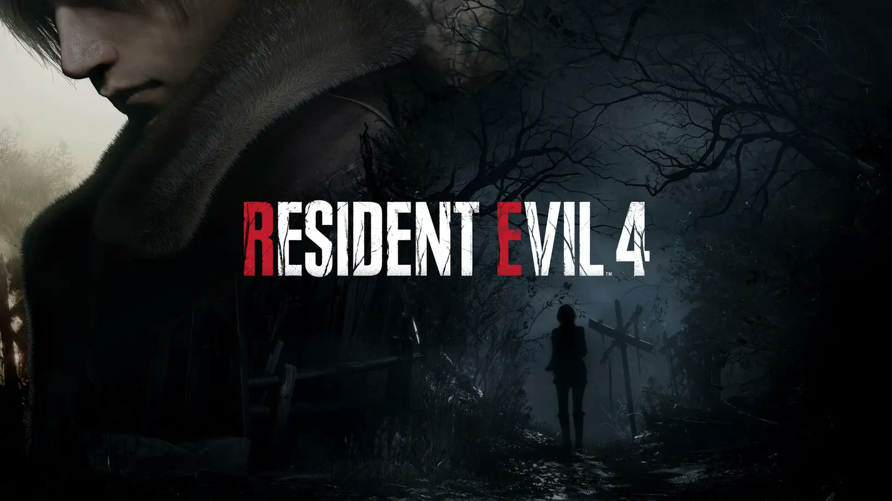

Resident Evil 4: Como a luta entre Leon e Krauser moldou o combate do remake
Reformulado, um dos maiores momentos do título surpreendeu até os diretores do game
O remake de Resident Evil 4 está cada vez mais próximo da estreia. Após a “Chainsaw Demo” impulsionar os ânimos dos fãs ávidos pelo título, novos detalhes sobre o game surgiram na internet.
Assim que o jogo foi confirmado, em setembro passado durante o State of Play, muitas teorias sobre as mudanças da história começaram a pipocar na internet. Uma delas se relacionava com a participação de Krauser na reimaginação, já que alguns rumores indicavam que o vilão não estaria na nova versão.
Para o alívio da comunidade, o personagem foi oficializado recentemente em um dos últimos trailers liberados. O registro, inclusive, apresentou detalhes sobre a famosa luta de facas entre Leon S. Kennedy e ele.
Em eventos prévios ao game, ambos foram enviados para Amparo, na floresta Amazônia, para uma missão. Foi lá que o antagonista viu um zumbi pela primeira vez e, através de Leon, descobriu os horrores de Raccoon City. Esse momento deve ser revisitado na trama durante o confronto da dupla.
Anteriormente, no início da divulgação de Resident Evil 4, os desenvolvedores haviam confirmado que o remake terá "quase nenhum Quick Time Event", aqueles momentos em que o jogo pede ações do player durante as cutscenes. Para quem se lembra, talvez todo mundo, o jogo original é recheado de sequências do gênero - incluindo a batalha entre Krauser e Leon.
Sobre este ponto, em entrevista ao Game Informer, os diretores Yasuhiro Ampo e Kazunori Kadoi não apenas deram alguns detalhes sobre a luta entre os personagens, como adiantaram que após concluírem este aspecto do game decidiram aplicar o modelo de combate em todo o jogo.
"Uma vez que a mecânica de parry havia sido implementada, a partir disso, quando joguei o original, eu me via querendo dar parry no original também. Então foi quando senti que as coisas estavam ficando interessantes", disse Kadoi.
Dessa forma, o recurso de defesa está em diversos momentos do gameplay, como pode ser visto na batalha contra o Chainsaw Man na demo divulgada na semana passada.
fonte: IGN Brasil